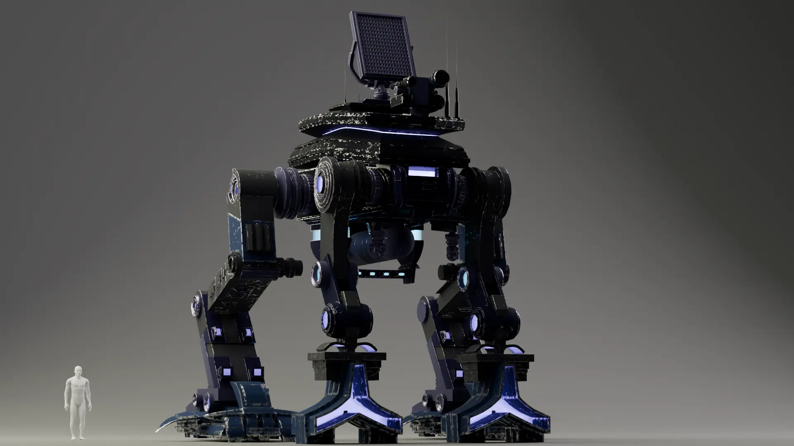
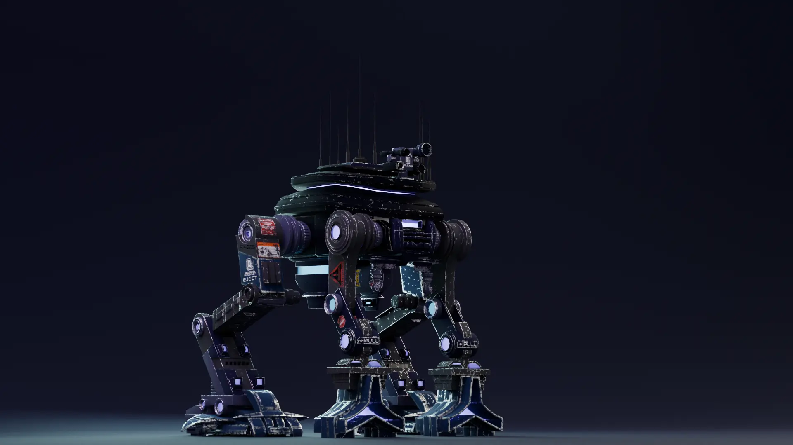
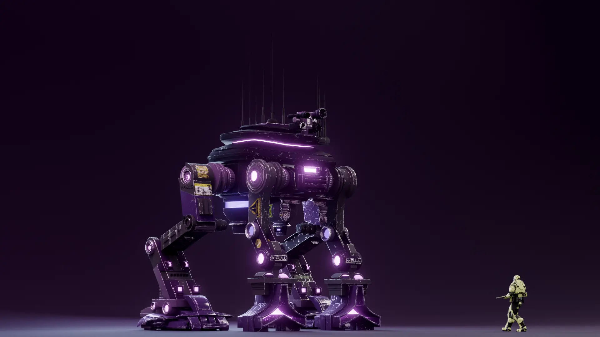
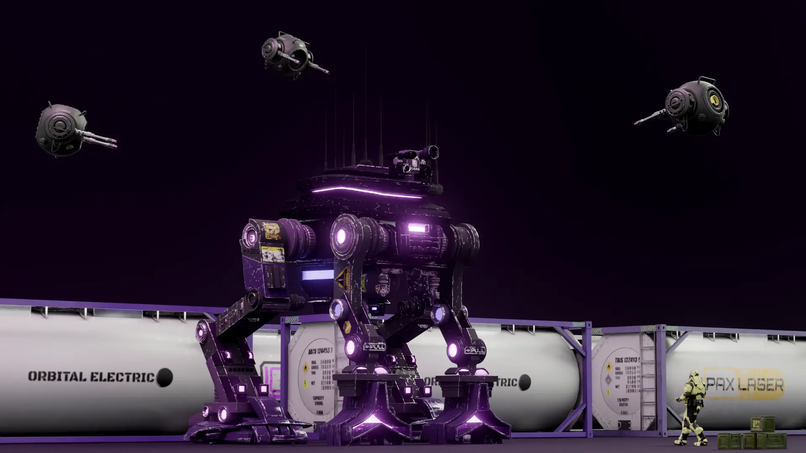
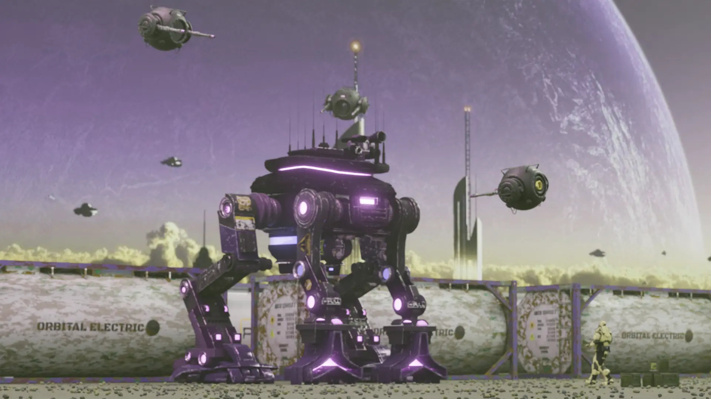
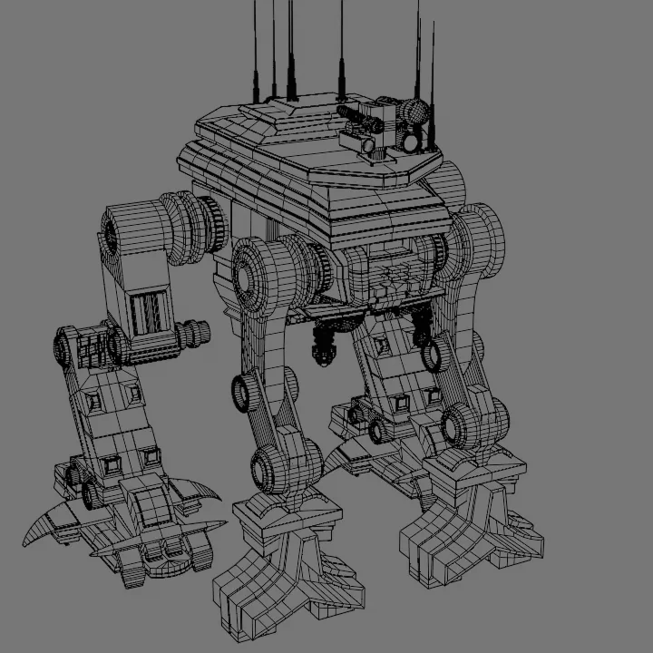
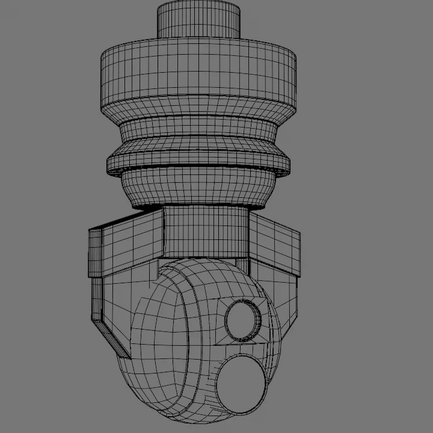
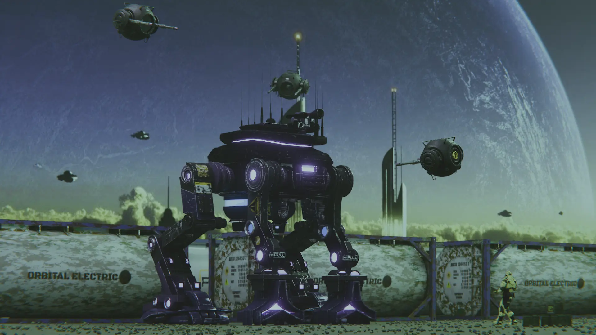

Introduction
After finishing the Mech Redesign I really wanted to keep the momentum going. That was one of my favourite projects, not just because of the model itself but the whole process of building a story around the mech. So I decided to expand the Delta-Forge lineup and build out the world more.
The Recon unit is a big 4 legged mech with triangular front feet. I wanted it to feel fast and purpose-built for scouting. The colour palette is deep space recon type, with a lot of deep blues.
I had the hard surface basics from the previous project and I also added the ND-Tools addon which made my workflow faster and more complex.
Concept Phase
The concept board focused on agile silhouettes and lightweight structures. I wanted to avoid the bulky tank look and aim for something that could actually run.

Material and Lighting Tests
Renders 1 and 2 are test renders with materials applied. I used them to see what secondary details looked right and what lighting fits the scene. I spent a while experimenting with the deep blue palette here.


Adding the Scene
Renders 3 to 5 are about adding props from SetchFab to give the mech some context. I dropped in background fuel tanks, some drones, and a yellow soldier for scale. The background is just a planet image I found on the internet.



Topology & Wireframe
Keeping poly-count low was the whole point of this project. The wireframe shows how I placed edges to keep the silhouette intact while staying lean. First one is the full body, second is a close-up of the legs and joints.


Final Render
The final render brings it all together. Compared to the original Mech Redesign this feels like a real evolution. The Delta-Forge lineup now has two members with very different roles and that contrast makes the world feel more real.
